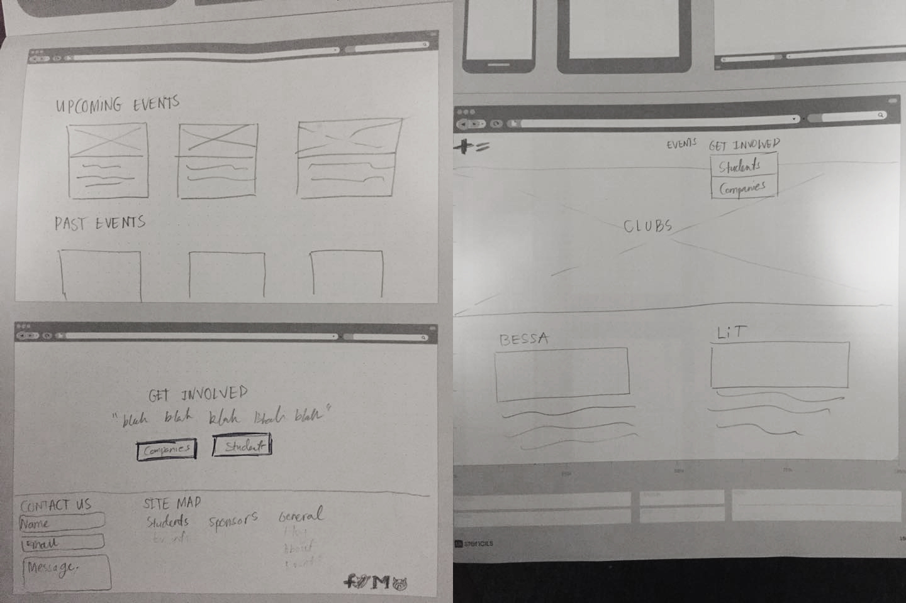

Tequity is a student organization founded in spring 2015 to help tackle diversity issues in tech. It is the first organization to hold events in partnership with different organizations who serve minority STEM communities - past events include a panel with a YC partner, a BBQ with 15+ student organizations, and a week-long speaker series about landing an internship.
Coming off of a successful first semester, Tequity wanted someone to help them build a stronger online presence in an attempt to become the hub for diversity in tech at Berkeley. My job was to build their website, as well as re-energize their brand for the new school year.
The website is still a work in progress - view the Github repo for updates.
Any good design has to start somewhere. After my first meeting with the existing development team, we built the first iteration of the website on a napkin:
After some brainstorming, we determined that our audience could be divided into two main groups: students who want to learn more about our upcoming events and companies interested in sponsoring future events. Since each group had radically different reasons for visiting our website, we decided to prioritize making it simple for each group to obtain information specific to them.

The final branding features bright colors and geometric sans-serifs. Color-wise, I wanted a bold palette that would promote empowerment without resorting to existing tropes of diversity (e.g. pink to represent women, rainbows everywhere). When bright colors are less appropriate, darker variants are also used.
The final product is interactive and mobile-friendly but still lightweight - since most of our content is static, we saw no need for a powerful front-end framework. Instead, we use Middleman to build templates into static HTML, a custom-made responsive SCSS framework, and jQuery and Underscore to deal with any client-side logic.